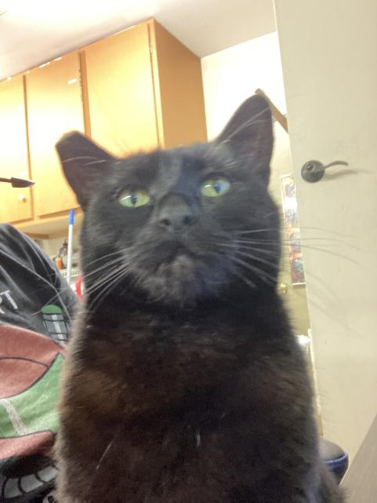

Shrine for Maple
This page is dedicated to our house's cat, Maple. She has a big personality and bigger flab. Don't make her angry; you won't like her when she's angry.
Things Maple likes to do:
- Bite me when I change my room around
- Ask for pets and then bite when she receives them
- Stare out the window at all the cars and then mess up the blinds
- Knock over bags of dice from the D&D shelves
- Find a bowl of paperclips and empty the bowl one paperclip at a time, flinging them off of the table she's not supposed to be on
She is mean but we love her anyway.
